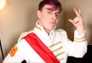
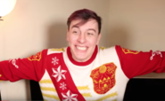
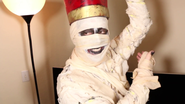

Roman represents Thomas' creativity and fanciful side. He is Thomas' ego, his hopes and dreams and his aspirations, romantic and passionate feelings. He also embodies Thomas' femininity, as Thomas comments in a Q&A given. As such, Roman loves a lot of things traditionally considered to be feminine such as musical theatre, singing, and romance. Roman is also shown to somewhat embody Thomas' masculinity, as he plays the classic prince role.
Etymology
Roman's name came from Romanticism, which was also linked with the individual, the subjective, the irrational, the imaginative, the spontaneous and the fanciful.
Physical Appearance
Former
Roman was first seen wearing a plain white prince suit with a simple red sash, along with a golden tassel dropping down from his left shoulder. His hair was brown at the time and worn swept to the right side.
Current
Roman's new outfit has golden tassels on his shoulders, shirt front and sleeves. He has a new emblem that also serves as his sigil on his shoulders. As the standard demands, his hair was dyed purple when Thomas dyed his. He also has a katana that he occasionally brings out.
Other Outfits
On occasion, Roman has worn various other outfits.
Christmas Sweater
In The Sanders Sides 12 DAYS OF CHRISTMAS!, Roman wore a Christmas sweater. It was red and white, his logo featured on the left slide and both of the sleeves. Logan has commented on it saying that it looks like your regular outfit, except that this is... knitted. The "sash" is decorated with white snowflakes, and so are the sleeves
Puppet
Roman's puppet in Learning New Things About Ourselves was based off the classic puppet design, looking much like something you would see in Sesame Street or The Muppets. There are not many changes to him in terms of his actual appearance, except that his chin is extremely exaggerated.
Halloween Costume
Roman dressed as a mummy for Halloween in EMBARRASSING PHASES: The Nightmare Instead of Christmas! He was wrapped in something that looked like gauze. He wore a large red crown and the parts of his skin that were showing (around his eyes and mouth) were face-painted black. He also painted his nails black.
Court Outfit
In Selfishness v. Selflessness, the sides are placed in a courtroom scene. Roman takes the role of the judge (Oh, I can do judgey). He wears a white judge robe, but still retains his red sash.
\Characteristics
Roman is almost always cheerful, encouraging and rarely depressed. As a very energetic character, he cannot seem to sit still for a long time as he needs to be physically doing something. He, much like Logan, is very hotheaded, though his outbursts tend to last in more varied lengths, often going on for a few short seconds to entire videos. He seems to be the more impulsive side of Thomas's feelings. Unlike Patton, who seems to hide his negative feelings and acts politely despite how he feels, Roman is much more open about his dislikes and opinions. It is shown in the newer episodes, specifically Crofters - THE MUSICAL! and Learning New Things About Ourselves, that Roman may be insecure. He also draws parallels with Logan that are worth mentioning, like his narcissism, though he is more vain and appearance based than anything. Despite his obsession with appearances and seemingly material things, he has shown that he is more intelligent and learned about things such as art and media history, languages, and performance arts.
Roman's personality is dramatic and flamboyant. He's vain and easily swayed with compliments, especially towards his appearance, and often mentions his sexuality (gay). He is afraid of letting down Thomas and the other Sides and has a deathly fear of rejection. He seems to have a never-ending supply of creative nicknames, often directed at Virgil, but he also applies them to Logan and Patton sometimes. Roman is particularly passionate and is fond of aiming for personal beauty. He is also rather naively idealistic when it comes to relationships, thinking of scenarios that could only exist in fairy tales. As seen in MOVING ON, Part 1/2: Exploring Nostalgia and MOVING ON, Part 2/2: Dealing With a Breakup, he's setting himself up for disappointment when reality fails to live up to his fantasies.
Relationships
Virgil
It is no secret that Roman and Virgil don't get along - their given elements during Sanders Sides Q&A were even given as fire and water, respectively. They are often pitted against eachother, an example being The Dark Side of Disney!, arguing and have been called out directly by Logan in ACCEPTING ANXIETY, Part 1/2: Excepting Anxiety! and My NEGATIVE Thinking. Roman and Virgil have always been at odds with each other, however after the events of ACCEPTING ANXIETY, Part 2/2: Can Anxiety Be Good? Roman has put a visible effort into being more understanding and not insulting Virgil as much, trying to co-operate and work with him better. There have been times where they have gotten along, for instance, at the end of The Dark Side of Disney! when they ended up agreeing at the about certain messages that could be learned from Disney films, as well as Fitting In (Hogwarts Houses!), when Roman made a visible effort to refrain from insulting Virgil.
Patton
Roman and Patton get along well and interact friendly most of the time. Roman has referenced to Patton in kind ways before, calling him smart and witty, giving him nicknames and allowing him to take care for him when he was 'injured' in My NEGATIVE Thinking. However, Roman has used Patton before, usually to prove a point to the others. Some examples are Fitting In (Hogwarts Houses!), when he called Patton smart only to annoy Logan and MOVING ON, Part 1/2: Exploring Nostalgia and MOVING ON, Part 2/2: Dealing With a Breakup, when he acted impulsively, affecting both Virgil and Patton negatively, thinking only of the fantasies he had for ideal romance.
Logan
Roman and Logan don't always get along. Roman often taunts Logan and teases him with very colorful nicknames (Logan returns this only once). Despite their differences, Logan and Roman do seem to get along somewhat, with them working together on several occasions, most notably Making Some Changes!. And though they underestimate each other, these two get along pretty well from time to time.
Janus
Janus uses Roman in order to get Thomas to lie. He directs the play, probably as a method of control over the situation. He praises Thomas in order to get him to believe that he is Patton. When Janus is revealed, Roman expresses disgust about him, despite him being kind. Janus lies to Roman and sarcastically tells him that he loves his new outfit, but Roman can't pick up on the sarcasm, which explains why he falsely believes Janus to be nice. Roman also says that [he] feel[s] so used after Janus leaves the scene.
Remus
Remus is referred to as being Roman's "twin", as explained by Logan in the episode Dealing with INTRUSIVE THOUGHTS. During this episode, the two are portrayed as two sides of the same coin. During this exchange between Logan, Remus, and Thomas, Logan explains the relationship between Remus and Roman as being similar to that of a split ovum. During Thomas' development, he subconsciously separated his "good" and "bad" creativity, causing a rupture that split Thomas' creativity in two. While Roman is compared to as "Netflix: Kids and Family", Remus brings up the question of why Thomas wants to stifle [his] own creativity.